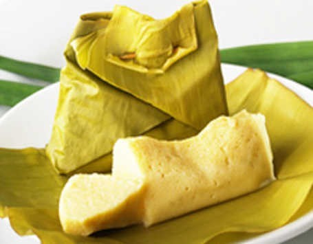

Bahan |
Cara buat
Barongko

Bahan:
- 1 sisir pisang kepok matang
- 100 gr gula pasir
- 350 ml santan
- 4 butir telur
- 1 saset susu bubuk full cream(bisa diganti 2 saset SKM)
- 1/2 sdt garam
- Secukupnya daun pisang untuk membungkus
- Lidi untuk menyemat
Cara membuat:
- Kupas pisang, iris daging buahnya, buang bagian tengahnya yang berwarna hitam.
- Masukkan dalam blender bersama santan, gula pasir, susu dan garam lalu blender sampai halus.
- Matikan blender, masukkan telur kemudian blender lagi sebentar sampai tercampur rata.
- Ambil selembar daun pisang, tuang 1 sendok sayur adonan lalu bungkus dengan bentuk tum. Semat dengan lidi, kukus selama 20 menit.
- Angkat dan biarkan dingin. Kemudian masukkan lemari es. Sajikan dingin lebih nikmat.
Kembali ke atas